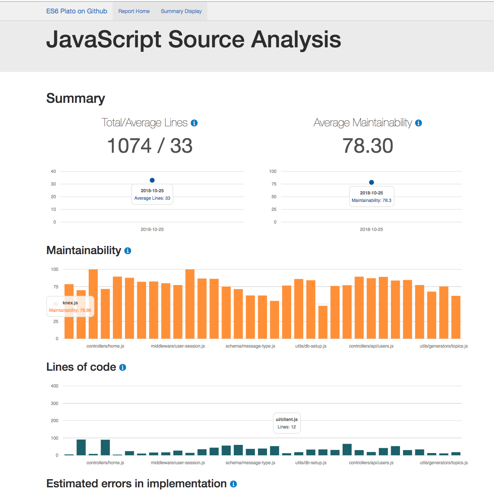

Aukland Node.JS Meetup
More Betterer
Bringing order to a chaotic codebase
Who is this guy?
Senior Engineer @ Lightbox
New Job

Day 1
And then

You see the code

Remember, it could be worse.
It could be .Net

Let's starting exploring

First Stop
package.json
Scripts
Use ⬆️ and ⬇️ keys
Dependencies
Use ⬆️ and ⬇️ keys
What else?
- engines (What versions of node and npm it supports)
- Jest
- Babel
- Browserify
- ???
Configuration
Look for process.env. or JSON files
Database
Migrations?
Routes
Routes Testing
Use ⬆️ and ⬇️ keys
Tests

Establish baselines
Routes Testing
Use ⬆️ and ⬇️ keys
Quality Analysis
Route response times
Monitoring
- Response times
- Resources
- "Golden" Routes
Incremental Change
The mess didn't happen overnight, you can't be expected to solve it immediately